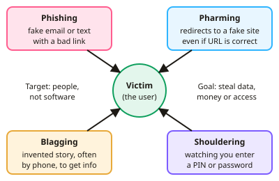

GCSE Computer Science · Topic 11
Cyber security threats and defences
Cyber security threats and defences is about the ways attackers target people and systems, and how we stop them.
We will look at social engineering, such as phishing, pharming, blagging and shouldering.
Then we study malware and network attacks, and defences like strong passwords, two factor authentication, encryption, firewalls and penetration testing.
- 4 subtopics
- 184 questions
- Free: 11.1 notes and 10 questions
In this topic
- 11.1Social engineering: phishing, pharming, blagging and shoulderingFree below · 37 questions
- 11.2Malware and network attacks: brute force, denial of service, SQL injection, data interceptionOpen in Full Marks · 79 questions
- 11.3Protecting systems: strong passwords, biometrics, two-factor authentication and encryptionOpen in Full Marks · 29 questions
- 11.4Firewalls, anti-malware, access levels and penetration testingOpen in Full Marks · 39 questions
11.1 · Free notes
Social engineering: phishing, pharming, blagging and shouldering

Key points
- Social engineering means manipulating people into giving away confidential information or access. It targets human weakness rather than technical flaws, so software alone cannot stop it.
- Phishing uses fraudulent emails, texts (smishing) or calls that pretend to come from a trusted organisation. They ask the victim to click a link, open an attachment or enter personal or financial details.
- Signs of phishing include a generic greeting such as 'Dear customer', urgent threats, spelling errors, a sender address or URL that does not match the real organisation, and unexpected attachments.
- Pharming redirects users to a fake website even when they type the correct address. It works through malicious code on the computer or by corrupting DNS records. The fake site looks identical and steals login or payment details.
- Exam tip: phishing needs the victim to act on a message such as clicking a link. Pharming redirects the victim automatically, with no suspicious message to notice.
- Blagging (pretexting) is inventing a believable scenario, usually by phone, to persuade someone to hand over information. An example is pretending to be IT support, the bank or a senior manager.
- Shouldering (shoulder surfing) means watching someone enter a PIN or password, for example at a cash machine, on a train or in a café. Defences are covering the keypad, using a privacy screen and being aware of who is nearby.
- Methods of prevention include staff training, verifying a caller's identity by another route, hovering over links to see the real URL, spam filters, anti-malware, a firewall and two-factor authentication.
- A padlock/https symbol only shows the connection is encrypted. It does not prove the website is genuine, because fake sites can use https too.
- Consequences of successful attacks include identity theft, fraud, financial loss, data breaches and reputational damage. Organisations may also be fined by the ICO under UK GDPR and the Data Protection Act 2018.
In more detail
- Worked phishing email: "Dear customer, your account will close in 24 hours. Click here", linking to bank-secure-login.xyz → generic greeting, false urgency and a fake address.
- Worked pharming: malware changes a computer's DNS settings, so typing the real bank address loads a fake site.
- Worked blagging: a caller claims to be from IT support and asks for your password to "fix your account".
- Worked shouldering: someone watches you type your PIN at a cash machine; cover the keypad.
- Prevention: staff training, calling back on a known number, never sharing passwords, checking web addresses and reporting suspicious messages.
Practice
Social engineering: phishing, pharming, blagging and shouldering: 10 questions
Pick an answer to check it, or open the answer for the explanation.
1. An email claims to be from a bank and urges you to click a link and 'confirm your details' or lose access. Which attack is this?
- Pharming
- Phishing
- Shouldering
- Brute force
Show answer
B: Phishing. Phishing uses a fraudulent message impersonating a trusted organisation, with a link or attachment, to trick the victim into giving away details.
2. A user types the correct web address of their bank but is sent to an identical fake site. Which attack has occurred?
- Blagging
- Phishing
- Pharming
- Shouldering
Show answer
C: Pharming. Pharming redirects users to a fake website even when the correct URL is typed, often by corrupting DNS or through malicious code.
3. A caller says they are from IT support and asks an employee to read out their password to 'fix a fault'. This is an example of:
- Denial of service
- Blagging
- Pharming
- Shouldering
Show answer
B: Blagging. Blagging is inventing a scenario, usually by phone, to persuade someone to reveal information.
4. Someone stands close behind you at a cash machine and watches you enter your PIN. This is called:
- Pharming
- Phishing
- Shouldering
- Blagging
Show answer
C: Shouldering. Shouldering (shoulder surfing) is observing someone enter confidential information such as a PIN or password.
5. Which feature of an email most strongly suggests it is phishing?
- It was sent during working hours
- It contains the company logo
- Urgent threat and a sender address not matching the company
- It is addressed to you by your full name
Show answer
C: Urgent threat and a sender address not matching the company. Urgency, threats and a mismatched sender address are classic phishing signs. Logos are easily copied and do not prove an email is genuine.
6. Which statement best describes social engineering?
- Using software to guess passwords
- Encrypting files to demand payment
- Flooding a server with requests
- Tricking people into revealing information or giving access
Show answer
D: Tricking people into revealing information or giving access. Social engineering exploits human behaviour, not technical weaknesses. The other options describe brute force, DoS and ransomware.
7. Why can pharming be harder for a user to spot than phishing?
- Pharming needs the victim to phone the attacker
- The user typed the genuine address and no suspicious message was sent
- Pharming sites are always encrypted so cannot be fake
- Pharming only happens on mobile phones
Show answer
B: The user typed the genuine address and no suspicious message was sent. In pharming the victim does everything correctly and is redirected anyway. The fake site looks identical, so there is no obvious warning sign.
8. Which is the most effective way to reduce the risk of shouldering when using a cash machine?
- Use a longer PIN
- Install anti-malware
- Use a firewall
- Shield the keypad with your hand
Show answer
D: Shield the keypad with your hand. Shouldering is a physical observation attack. Software defences do not help, but hiding the keypad prevents the PIN being seen.
9. An accounts clerk gets a call from someone claiming to be the finance director, demanding urgent bank details. What is this and the best response?
- Shouldering; use a privacy screen
- Pharming; reboot the PC
- Blagging; verify the caller's identity another way
- Phishing; install a firewall
Show answer
C: Blagging; verify the caller's identity another way. A made-up scenario by phone is blagging. Verifying the caller through a known number or procedure defeats it.
10. Which statement about pharming is correct?
- It is a type of denial of service attack
- It can redirect users to a fake site even if they type the correct URL
- It is carried out by looking at someone's screen
- It always requires the victim to open an email attachment
Show answer
B: It can redirect users to a fake site even if they type the correct URL. Pharming redirects traffic to a fake site, often by DNS tampering or malicious code, with no click on an emailed link needed.
Keep going in Full Marks
Full Marks has 37 questions on Social engineering: phishing, pharming, blagging and shouldering (27 more than here), set out in practice levels. You also get notes and 3D models for all 4 subtopics of Cyber security threats and defences, plus games, timed exams and past papers.